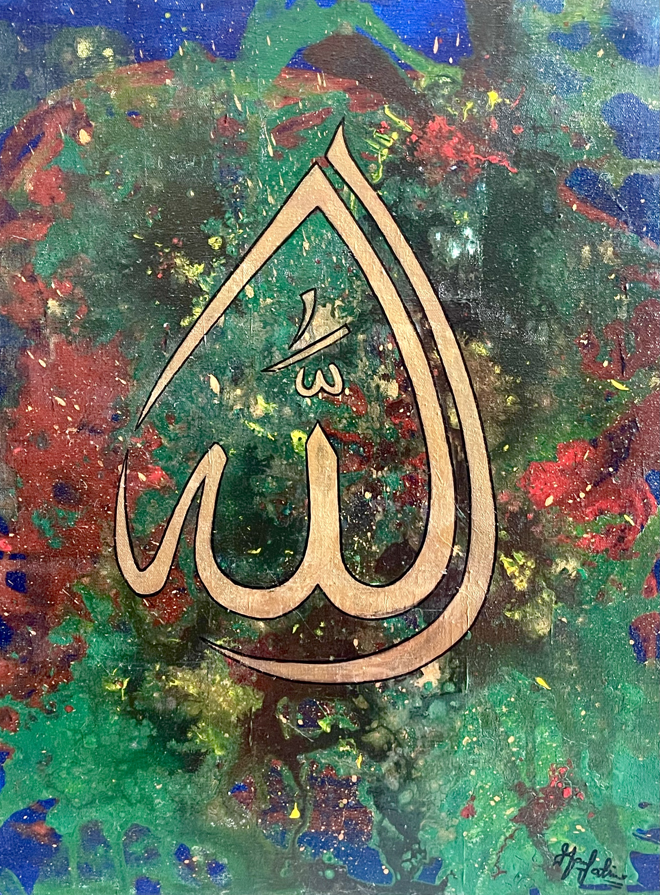
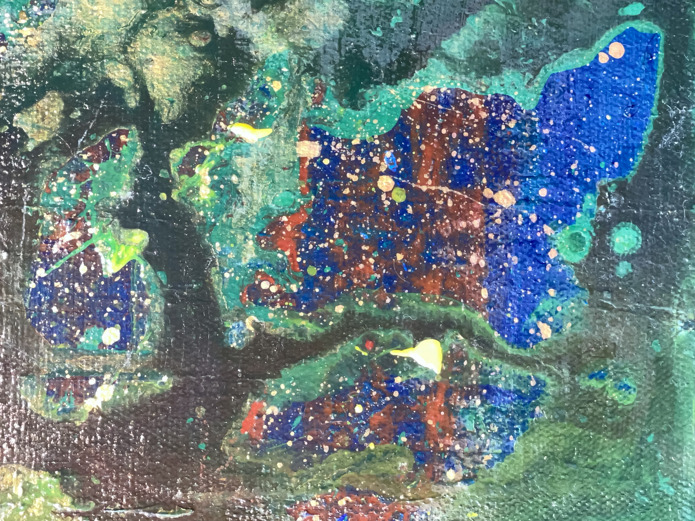
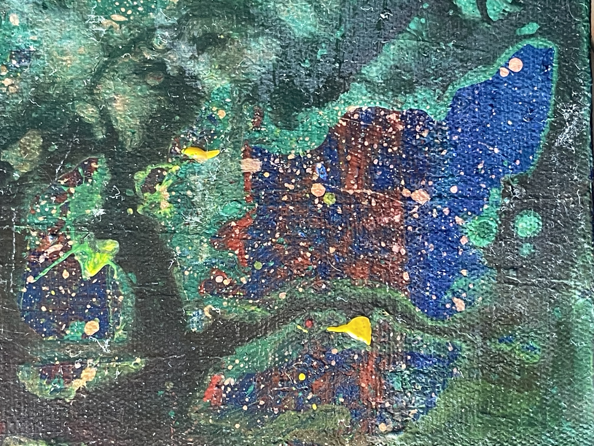
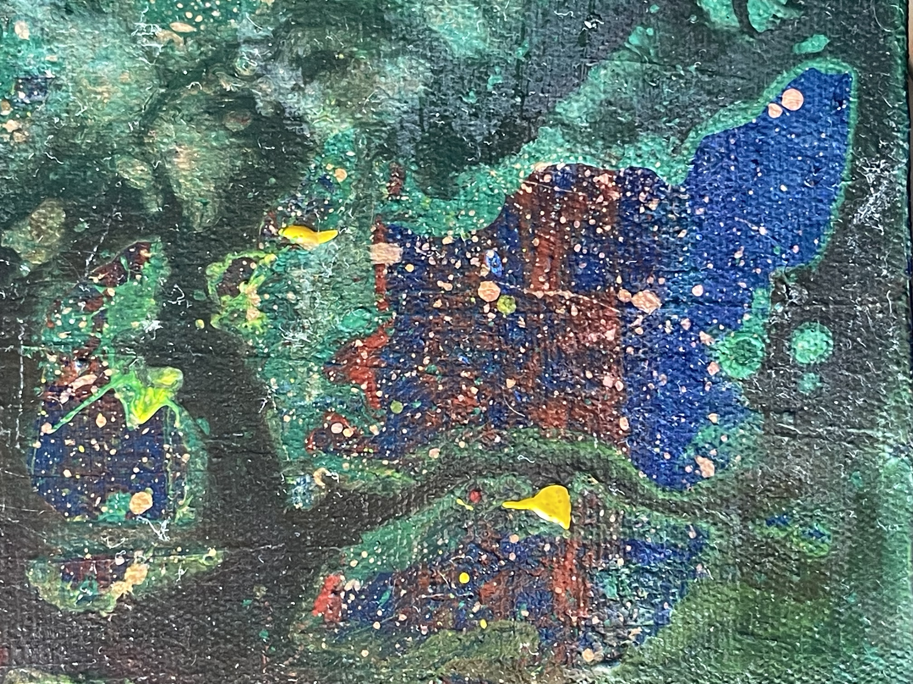
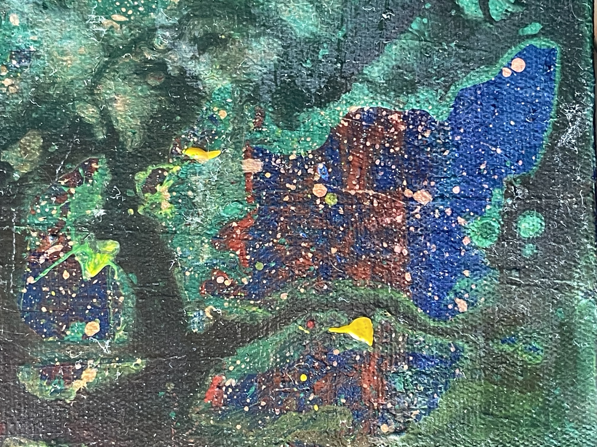

ALLAH
This painting beautifully depicts the sacred name of Allah, written in a humble way that evokes a sense of devotion. The simplicity of the calligraphy contrasts with the vibrant, multi-colored background, symbolizing the infinite and diverse expressions of divine presence in the world. Each color blends seamlessly into the next, representing the richness of creation and the boundless nature of God's mercy. The profound depth of Allah’s name, offering beauty, spirituality, and color come together in perfect harmony.
Details

 

